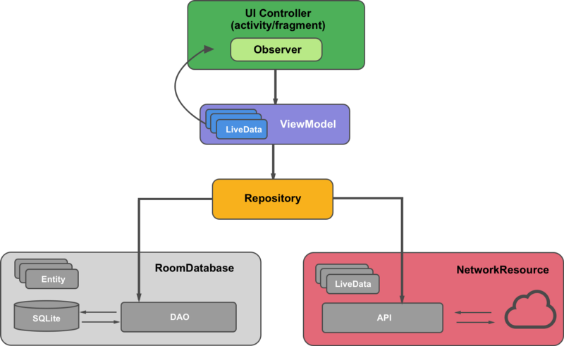
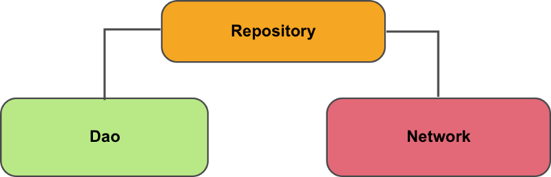
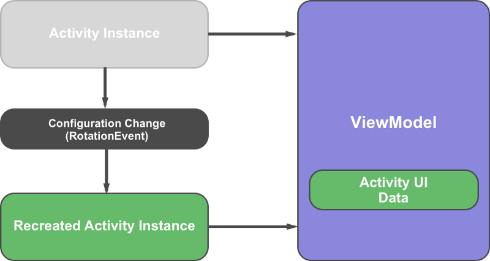
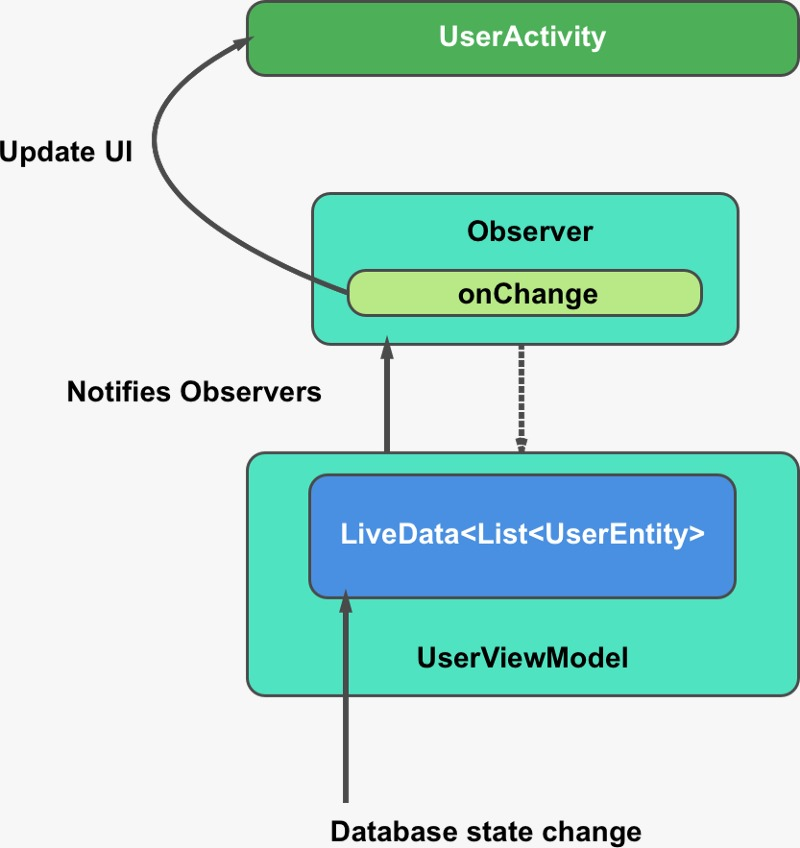
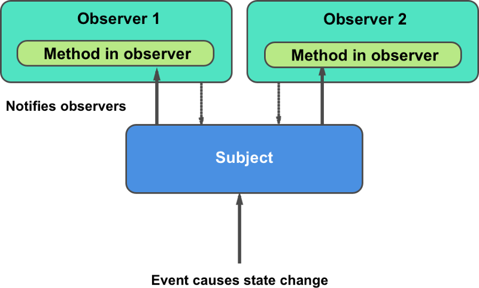

Universidad Centroamericana "José Simeón Cañas".
Programación de dispositivos móviles.
Ciclo 01/19.
Laboratorio 07.
Viernes, 17 de mayo de 2019.
Temario:
Conceptualización básica acerca del componentes de arquitectura View Model, LiveData y ROOM, y explicación acerca de la filosofía que los rige.
Uso de View Model para la persistencia de datos ante el cambio en el ciclo de vida de los distintos componentes de Android.
Control y observación de cambios en los datos a través de LiveData.
Manejo y mantenimiento de bases de datos SQLite a través de ROOM.
Uso de co-rutinas de Kotlin, para realizar tareas asincronas de mantenimiento de la base de datos.
Objetivos:
Comprenda la filosofía de diseño que implementan los componentes de arquitectura de Android Jetpack vistos en el laboratorio.
Implementar el componente View Model y manipular sus características orientadas a la persistencia de datos.
Implementar el componente LiveData y manipular sus características orientadas a la observación y control de cambios en los datos.
Implementar el componente Room y manipular sus características orientadas al manejo de bases de datos SQLite.
Librería de persistencia ROOM.
Persistencia, unificación y reacción de datos.
Introducción a la librería.

La librería de persistencia Room provee una capa de abstracción sobre SQLite; esto permite un acceso más robusto y de fácil implementación a la base de datos, mientras se aprovecha todo el poder de SQLite.
Este diseño crea una experiencia del usuario consistente y agradable. Independientemente de que el usuario regrese a la app varios minutos después de cerrarla por última vez o varios días más tarde, verá al instante la información de la app que persiste a nivel local.
Room reduce drásticamente la cantidad de código implementado, ya que este es generado, internamente en tiempo de compilación por medio del uso de las anotaciones. Este ORM tiene definido los estándares tanto de sintaxis como de semántica para, conexiones, querys, etc.
Posee una estructura de capas jerárquica, por lo que cada componente solo depende del componente que está un nivel más abajo. Por ejemplo, las actividades y los fragmentos sólo dependen de un ViewModel, y estos a su vez de los repositorios.
Encargada de controlar tanto la conexión, consultas y mantenimiento de la base de datos; se compone de tres principales componetes:
Entity
Clase anotada que representa y mapea una tabla/entidad de la base de datos.
Ejemplo de implementación
@Entity (tableName = "word_table")
data class Word(
@PrimaryKey @ColumnInfo(name = "word") val word: String
)
DAO (Data Access Object)
Interfaz anotada que representa y mapea las consultas SQL a funciones nativas.
Ejemplo de implementación
@Dao
interface WordDao {
@Query("SELECT * from word_table ORDER BY word ASC")
fun getAllWords(): LiveData<List<Word>>
@Insert
suspend fun insert(word: Word)
@Query("DELETE FROM word_table")
fun deleteAll()
}
RoomDatabase
Capa de la base de datos en la parte superior de la base de datos SQLite que se ocupa de las tareas que se manejan con un SQLiteOpenHelper. La base de datos Room utiliza el DAO para emitir consultas a la base de datos SQLite.
Esta clase anotada con @Database debe cumplir las siguientes condiciones:
Ser una clase abstracta que herede de RoomDatabase.
Incluir las entidades asociadas con la base de datos.
Tener un método abstracto que no tenga argumentos y que devuelva la clase anotada con @Dao.
Ejemplo de implementación
@Database(entities = [Word::class], version = 1 ,exportSchema = false)
abstract class WordRoomDatabase : RoomDatabase() {
abstract fun wordDao(): WordDao
companion object {
@Volatile
private var INSTANCE: WordRoomDatabase? = null
fun getDatabase(context: Context): WordRoomDatabase {
val tempInstance = INSTANCE
if (tempInstance != null) {
return tempInstance
}
synchronized(this) {
val instance = Room.databaseBuilder(
context.applicationContext,
WordRoomDatabase::class.java,
"Word_database"
).build()
INSTANCE = instance
return instance
}
}
}
}
Repository

Clase que se encarga de administrar múltiples fuentes de datos, ya sean web services, documentos, otras bases de datos, etc., con el fin de tener un solo punto de acceso a los datos.
Es la única clase que depende de varias: El repositorio depende de un modelo de datos persistente y de una fuente de datos de backend remota.
Toda la lógica de decidir de donde se obtendrá la información es manejada aquí.
Si los datos están inactivos, el módulo de repositorio comienza a actualizar los datos en segundo plano.
Ejemplo de implementación
class WordRepository(private val wordDao: WordDao) {
val allWords: LiveData<List<Word>> = wordDao.getAllWords()
@WorkerThread
suspend fun insert(word: Word) {
wordDao.insert(word)
}
}
ViewModel

Se encarga de proporcionar data a la UI. Esta clase trabaja fuera de cualquier ciclo de vida, por lo que permite que los datos que contiene sobrevivan a cambios de configuración en la ejecución.
En el caso particular de Room, recive uno o varios repositorios de los cuales obtendrá los datos que manejará en la ejecución de la aplicación
Actúa como mediador entre el Repositorio y la UI. Además permite comunicar información entre fragmentos y actividades de forma mas sencilla.
Ejemplo de implementación
class WordViewModel(application: Application) : AndroidViewModel(application) {
private val repository: WordRepository
val allWords: LiveData<List<Word>>
init {
val wordsDao = WordRoomDatabase.getDatabase(application).wordDao()
repository = WordRepository(wordsDao)
allWords = repository.allWords
}
fun insert(word: Word) = viewModelScope.launch(Dispatchers.IO) {
repository.insert(word)
}
}
LiveData
Clase que permite que toda instancia de la misma pueda ser observada. Esto implica que siempre contiene la última versión de la data, notifica cuando ocurre un cambio en esta y está atenta al ciclo de vida: Los componentes de la UI solo observan la data relevante y nunca dejan de estar atentos a cualquier cambio.

Patrón de Diseño Observer
LiveData utiliza este patrón para notificar cambios en la UI.

El patrón observador se da cuando un objeto llamado subject(sujeto) tiene una lista de objetos asociados llamados observers(observadores). Cuando el estado del sujeto cambia, este notifica a todos los observadores.
Co-rutinas Kotlin
El uso de las co-rutinas de kotlin, en la implementación de una arquitectura Room es vital para realizar trabajos en segundo plano, y asegurar la fluidez de la UI en la aplicación. Por ello se recomienda la lectura del siguiente artículo acerca de las mismas, donde se ahonda en el tema y se dan detalles importantes para la comprensión de estas.